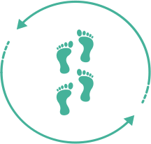
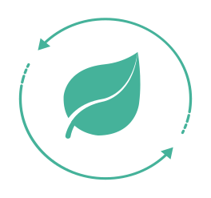
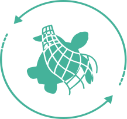
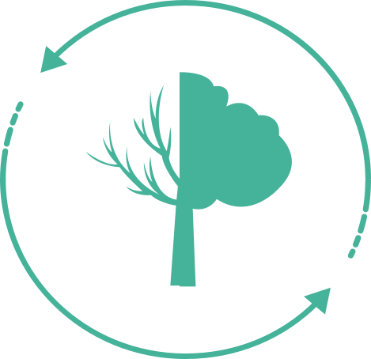
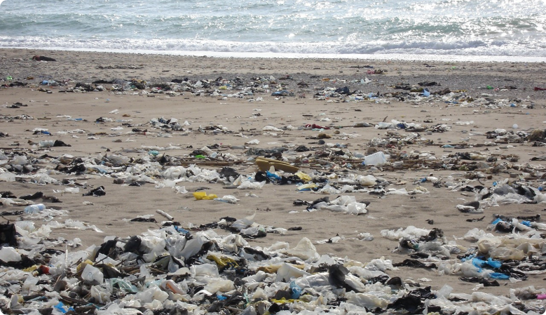
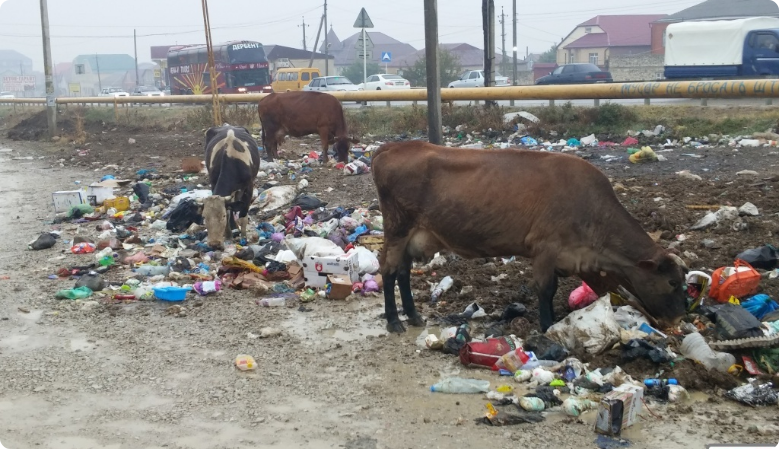
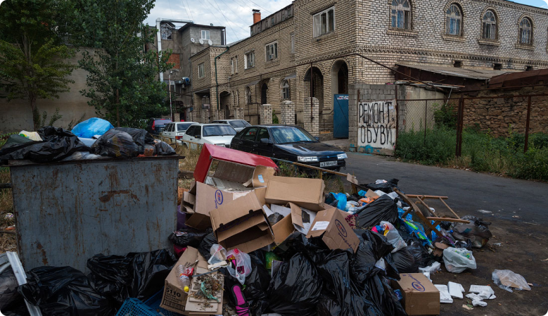

As Salamu alaykum, we are simple students of 56 schools. We are engaged in volunteering. We are trying to make our native land cleaner!

What we do
We show the people and government polluted places in our region. We write articles and shoot short videos, so we hope that people will pay attention to us and we can solve this environmental problem together!

Сentral objective
Our main goal is to make our native land cleaner. We want all people to pay attention to this. We hope you can help us!

Help
In the near future, we will begin to actively restore order in the city of Makhachkala. You can apply to become a volunteer. Or you can pay for the place that we will start cleaning first!

Activity
Here you will see the polluted places of our region!

Beach “Берёзка”
Specialists of the Dagestan Department of Rospotrebnadzor found that raw sewage entering the Caspian sea caused the appearance of cholera Vibrio of the third group of pathogenicity-the causative agent of acute intestinal diseases. We believe that we urgently need to save this beach and not only it, because there are a lot of such polluted beaches in Makhachkala!
Help
Read
Volunteerism
Lake Ak-Gel
In the Makhachkala lake AK-Gel, fish die due to the low content of dissolved oxygen in the water. This conclusion was reached by experts of the all-Russian popular front (onf) in Dagestan after analyzing water samples. However, the problems of the reservoir do not end there – it dries up. An increased concentration of heavy metals-copper and zinc-was found in the water of the lake. We hope that you can help us. Leaving your data you can become a volunteer and help the lake!
Help
Read
Volunteerism

Semender
Where to put the waste? In the suburb of Makhachkala-the village of Semender-there is not a single garbage can. If 30 thousand people start throwing garbage directly on the streets, an environmental disaster will not happen, and the village will quickly change its status to a dump! We, in turn, are going to put garbage cans in the village of Semender and try to clear all the garbage!
Help
Read
Volunteerism

Makhachkala
Unfortunately, in 2019, Makhachkala was recognized as the dirtiest city in Russia. Moreover, Makhachkala is located on the shore of the Caspian Sea. It is also considered a very dirty lake. Accordingly, due to such news, tourism will not develop and residents of Makhachkala and all of Dagestan will not feel comfortable. We will try to hold various rallies and pickets to remind people that this is the place where they live and perhaps their children will live, and we will urge them not to litter and help us to clear the streets of Makhachkala of garbage!